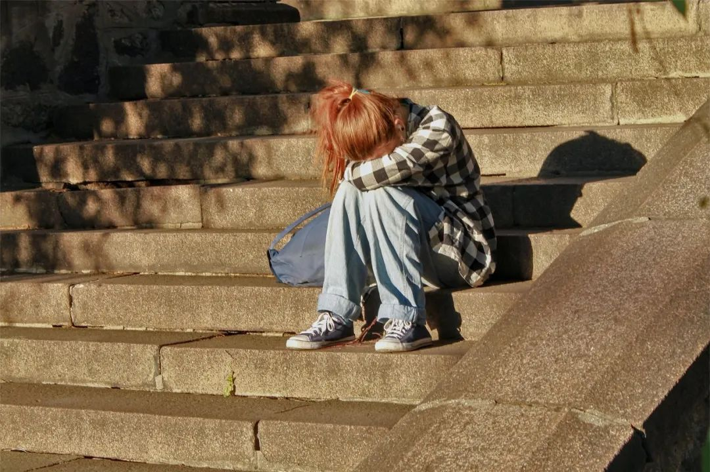
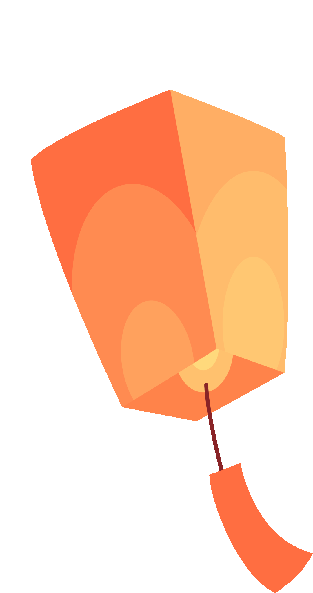

“爱情和暴力哪一个先来，谁也不知道。”
因为热爱露营，她自称为“睡袋女士”。
因为心怀毅力和乐观，露营途中虽危险重重她仍怡然自乐。
可是，生活对她来说也危机重重、意外频出，孤身在伦敦留学的她遭受了前男友的暴力，面对这不可预计的苦难，“睡袋女士”打算迎难而上，尽快实现对前男友的举报和惩罚，然后迈向新的生活。
坚强的“睡袋女士”兵来将挡水来土掩，就像勇敢面对露营中出现的种种危机一样，但坚强却是沉重的，是伤口结了痂然后不怕疼。
1. 噩梦开端，初次暴力
“睡袋女士”与前男友因校友身份快速相识和熟络，
未曾想过，暴力和控制却披着爱情的外衣狰狞而来。
初次暴力发生在一次晚餐。只因她迟到了10分钟，前男友就变得生气和阴郁，他只点了自己的单人餐，同时推掉了两人约定好去的现场演出。感觉对方无理取闹后，“睡袋女士”打算回家，结果在去地铁站的路上，对方一直打电话恳求她返回，于是，她心软答应了。

返回后，他声称疲惫，于是没去看现场演出而是前往了他的公寓楼。路途中，“睡袋女士”劝说他不要继续做非法贸易，他们因此产生争执，
对方气急败坏，将她扔到楼下的花园地上推拽，导致她的嘴唇、手、脸、牙等多处严重受伤。
幸运的是，周围的人发现了他的暴力行为，“睡袋女士”趁机逃到朋友家过夜。
2. 一波未平，一波又起
令睡袋女士始料未及的是他的道歉和愧疚虚伪而短暂。
他在她走后打了40多次电话，并扬言不接就要断掉关系，无理取闹地声称这次暴力双方要责任对半。
然而意想不到的噩梦接踵而至。她渐渐发现前男友的暴力行为很多：有矛盾就拉黑联系方式、尾随她到公寓借发展关系为由企图发生性行为并用冷暴力拒绝承担责任、在她家摔东西、在她拿到录取通知后于公共平台诋毁她......

“他那边给我的反馈中从来没有任何心平气和的沟通，从来都是欺骗，所有的事情都是欺骗。”
面对精神和肢体的暴力，睡袋女士想过和他沟通来解决问题，但他拒绝沟通，还拉黑她的联系方式。
在得知她要报警后，前男友用自杀威胁她。她出于担心还进行了劝阻和安慰，后来意识到这只是对方表演和欺骗的手段之一，达到让她不要揭发的目的。
“睡袋女士”感到失望无比，甚至开始陷入自我怀疑的泥潭。
3. 证据不足，求助碰壁
面对前男友一次一次的暴力和欺骗，“睡袋女士”决定求助于警方。
但由于距离那次花园中的亲密关系暴力已经超过一个月，监控视频已经不复存在，无法找到足够的证据，因此报警不了了之。
于是，睡袋女士转而寻求学校的帮助。但是学校的各个部门都在踢皮球，加上没有监控，负责犯罪的部门也难以深入调查，因此学校没有提供心理咨询服务之外的服务和帮助。
但是睡袋女士说“我觉得我内心足够强大，这件事也让我变成了一个更强大的人，更强大的女人。我不需要心理帮助，我只需要最直接的解决方案——让他受到应有的惩罚。”
4. 向内改变，涅槃重生
睡袋女士也在一次次讲述她被伤害的经历中不得不触碰内心的伤痕而被多次伤害，但与此同时，她的讲述逻辑和面对暴力事件的思路也从混沌转向清晰和富有逻辑。

她越来越清楚的认识到亲密关系暴力本身是不合理的，她不再怀疑是不是自己有过错才被暴力，而坚定的相信是施暴者的错误。
同时，她反对社会上受害者有罪论的舆论风气，觉得关注点应该多放在施暴者的问题上，而非为施暴者开脱罪名。
5. 期待改变，期待发声
在向学校警方求助、咨询了很多帮助女性的机构、寻求法律援助和自媒体曝光后，睡袋女士越发感到女性组织应该更强大一点，应该作为坚实的后盾去帮助受害女性，从而让施暴者获得实质性的惩罚。
她自言自己是比较积极和主动寻求帮助和支持的女性，会主动联络组织并花费很多时间精力。但是很多女性可能没有勇气和能力去为自己发声，同时，因为缺乏平台的支持和放大，她们的声音也会被被湮没。
受害者忍气吞声而施暴者没有受到任何道德法律惩罚，这是极其不好的结果。
6. 凝聚光芒，无惧而行
睡袋女士想对女性说“没有必要沉浸在悲伤的情绪里，遇到亲密关系暴力后要开始向前看，开始寻求帮助解决问题。在这个过程中，你首先得明确自己的目标是什么，要达成的结果是什么。”
她鼓励女性勇敢站出来为自己发声，联络资源，最终达到对施暴者的惩罚。或许她曾有过自我怀疑和害怕，但她的坚强和勇敢，让她足够照亮自己和其他被她鼓舞的人。
愿反亲密关系暴力的组织和流程足够强大可以来帮助被暴力者，愿发声者的声音都被听到，想得到的结果都实现。而我们，也会尽力来帮助每个遭受亲密关系暴力的人，无论是举报还是媒体宣传发声。

希望每个人的光都可以被看到，
如果不够亮，那么众人之力也可燎原。
---
- 作者 | 赵萌
- 审校 | 马欣钰、董智、秦科
- 排版/封面 | 游舸
- 图片来源 | unsplash